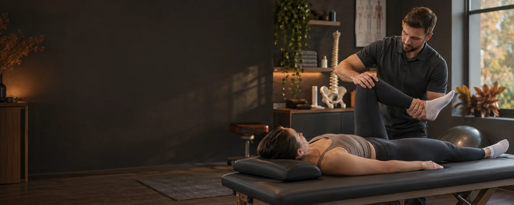
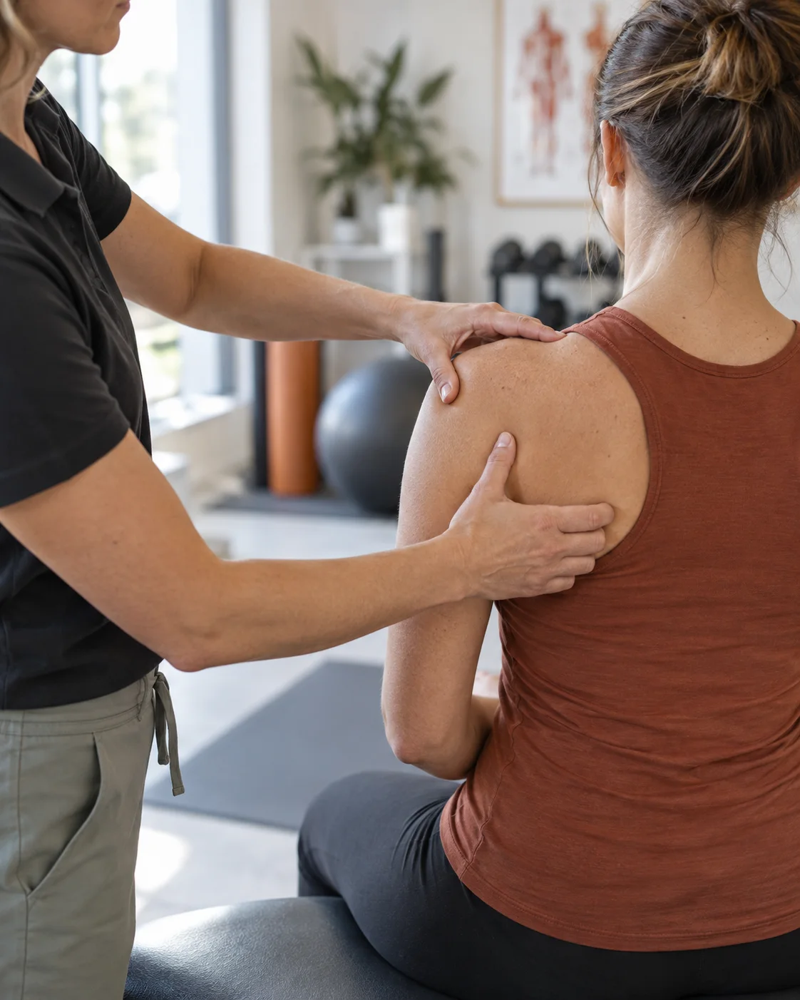

Chrbtica a kĺby
Bolesti krížov, hrudnej a krčnej chrbtice, blokády kĺbov, artróza či chybné držanie tela.

Fyzioterapia pre deti a dospelých
Individuálna rehabilitácia, odborné terapie a masáže prispôsobené vášmu veku, stavu a cieľu.
Pomáham pri bolestivých stavoch, po úrazoch a operáciách aj pri návrate k športu. Postup vždy prispôsobujem aktuálnemu zdravotnému stavu.
Poradiť sa o vhodnom postupeBolesti krížov, hrudnej a krčnej chrbtice, blokády kĺbov, artróza či chybné držanie tela.
Stavy po zlomeninách, výronoch, operáciách meniskov, väzov alebo po výmene kĺbu.
Športové úrazy, preťažené svaly, kompenzačné cvičenia, stabilizácia chrbta a kineziotejping.
Od cielenej rehabilitácie po uvoľňujúce masáže. Pri výbere vhodnej metódy vám rád poradím.
Zameranie na bolesti chrbtice, funkčné poruchy pohybového aparátu a poúrazové či pooperačné stavy. Súčasťou môžu byť mobilizácie, mäkké techniky, senzomotorické a kompenzačné cvičenia.
Objednať termín
Veľmi jemná neinvazívna technika pracujúca s kraniosakrálnym systémom. Je určená rôznym vekovým kategóriám.
Manuálna terapia vykonávaná v prirodzenom pohybe. Súčasťou postupu môže byť porovnanie dolných končatín, domáce cvičenie a Breussova masáž.
Klasická, reflexná, manuálna lymfodrenážna, športová a Breussova masáž. Výber sa prispôsobuje aktuálnemu stavu a cieľu klienta.
O mne
Volám sa Michal Straka. Bakalárske štúdium som absolvoval na Inštitúte fyzioterapie, balneológie a liečebnej rehabilitácie v Piešťanoch. Magisterské štúdium som dokončil na Slovenskej zdravotníckej univerzite v Banskej Bystrici.
Pracoval som na Slovensku, v Česku aj Rakúsku. Skúsenosti som získal s rôznymi vekovými skupinami, od novorodencov a seniorov až po rýchlostných kanoistov a slovenskú reprezentáciu.
Pri práci využívam metódy prispôsobené veku, zdravotnému stavu a cieľu klienta. Kraniosakrálnej osteopatii sa venujem od roku 2018.
Bez univerzálnych postupov. Najprv potrebujem porozumieť problému a tomu, čo sa chcete vrátiť robiť bez obmedzení.
Prejdeme vaše ťažkosti, priebeh bolesti, predchádzajúcu liečbu a cieľ návštevy.
Podľa potreby posúdim držanie tela, rozsah pohybu, svalové napätie a reakciu na záťaž.
Navrhnem vhodnú terapiu, vysvetlím ďalší postup a podľa potreby odporučím domáce cvičenie.
Ceny vychádzajú z pôvodného webu. Aktuálnu cenu a dĺžku terapie si, prosím, overte pri objednaní.
Objednanie
Potrebujete poradiť, vysvetliť možnosti alebo si dohodnúť termín? Zavolajte alebo napíšte.